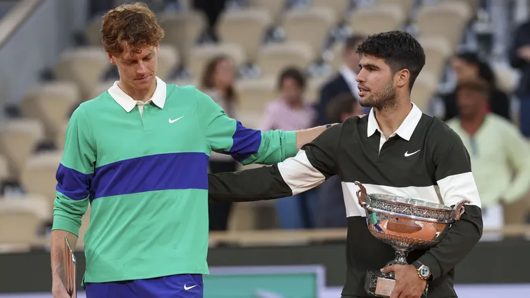

Carlos Alcaraz gana Roland Garros 2025 en una final épica
El español Carlos Alcaraz se consagró campeón de Roland Garros 2025 tras vencer al italiano Jannik Sinner en una de las finales más emocionantes de los últimos años. El partido se disputó el 8 de junio en la mítica cancha Philippe Chatrier y finalizó con un marcador de 6-4, 5-7, 6-3, 4-6, 10-6 a favor del español en el último set, que fue un super tie-break.
Roland Garros, también conocido como el Abierto de Francia, es uno de los cuatro torneos de Grand Slam del circuito profesional de tenis. Se celebra cada año en París, sobre superficie de polvo de ladrillo, lo que lo convierte en uno de los torneos más exigentes física y mentalmente para los jugadores.
Carlos Alcaraz, nacido en 2003 en El Palmar, España, es considerado uno de los talentos más prometedores del tenis actual. Con tan solo 22 años, ya ha conquistado múltiples títulos importantes y se destaca por su potencia, velocidad y madurez táctica dentro de la cancha. Esta consagración en Roland Garros representa su tercer título de Grand Slam, consolidándolo como uno de los líderes de la nueva generación.
Su rival en la final, Jannik Sinner, actual número uno del mundo, es un tenista italiano que ha tenido una temporada destacada. Sinner se caracteriza por su consistencia desde el fondo de la cancha y su mentalidad fría y calculadora. A sus 23 años, ya ha sido campeón del Abierto de Australia y finalista en múltiples torneos de gran nivel.
El encuentro fue una verdadera batalla. Alcaraz comenzó sólido, pero Sinner logró igualar el marcador en el segundo set. En el cuarto set, el italiano mostró su experiencia y estiró el partido a un set decisivo. En el super tie-break, Carlos desplegó toda su agresividad y valentía, cerrando el partido con autoridad y emoción frente a un público que vibró en cada punto.
Con este triunfo, Alcaraz se convierte en el primer español en ganar Roland Garros desde Rafael Nadal, y marca el inicio de una nueva era en el tenis mundial.
Publicado: 9 de junio de 2025